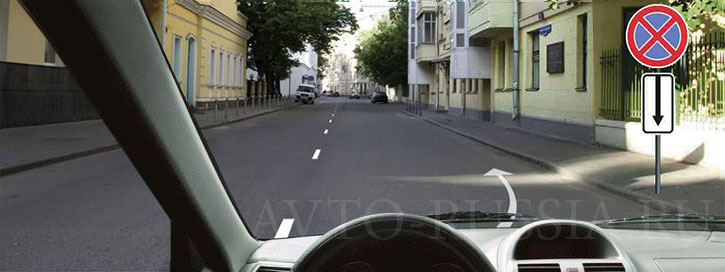
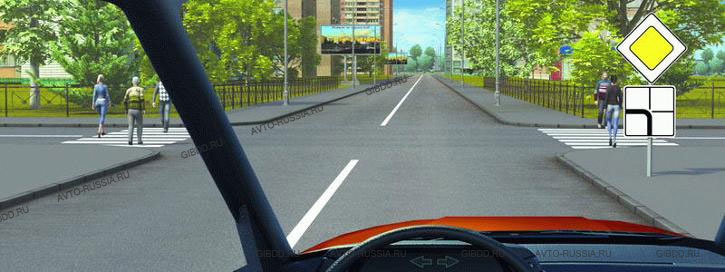
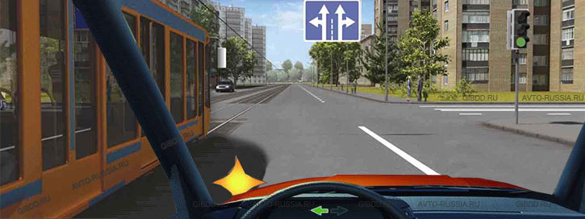

Вопрос 1/7.
При движении на легковом автомобиле, оборудованном ремнями безопасности, должны быть пристегнуты:
Только водитель
Водитель и пассажир на переднем сиденье
Все лица, находящиеся в автомобиле
Вопрос 2/7.
Разрешено ли Вам поставить автомобиль на стоянку в этом месте?

Разрешено
Разрешено, если Вы проживаете рядом с этим местом
Запрещено
Вопрос 3/7.
Что означает мигание желтого сигнала светофора?
Предупреждает о неисправности светофора
Разрешает движение и информирует о наличии нерегулируемого перекрестка или пешеходного перехода
Запрещает дальнейшее движение
Вопрос 4/7.
В каком случае Вы обязаны уступить дорогу пешеходам?

Только при повороте налево
Только при повороте направо
В обоих случаях
Вопрос 5/7.
Где начинают действовать требования Правил, относящиеся к населенным пунктам?
Только с места установки дорожного знака «Начало населенного пункта» на белом фоне.
С места установки дорожного знака с названием населенного пункта на белом или синем фоне.
В начале застроенной территории, непосредственно прилегающей к дороге.
Вопрос 6/7.
Что следует сделать водителю, чтобы предотвратить возникновение заноса при проезде крутого поворота?
Перед поворотом снизить скорость и выжать педаль сцепления, чтобы дать возможность автомобилю двигаться накатом на повороте.
Перед поворотом снизить скорость, при необходимости включить пониженную передачу, а при проезде поворота не увеличивать резко скорость и не тормозить.
Допускаются любые из перечисленных действий.
Вопрос 7/7.
При повороте налево Вы:

Должны уступить дорогу обоим транспортным средствам.
Должны уступить дорогу только легковому автомобилю.
Имеете право проехать перекресток первым.
Результат